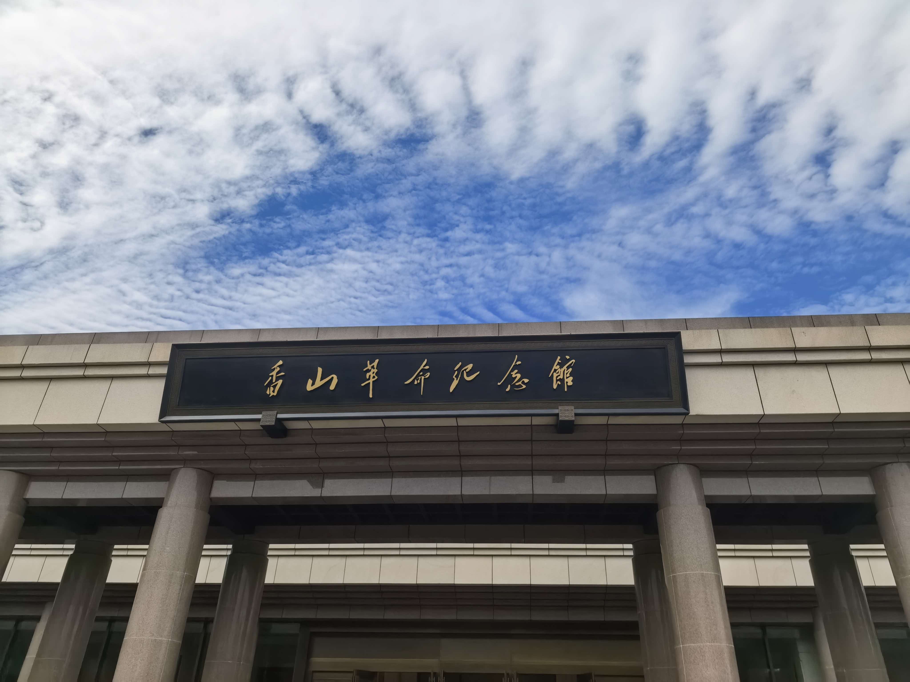

北京红色教育基地寻访实践 · 线上全景展厅
从思想觉醒到进京赶考，再到开国奠基，沿着历史时间线走进北京红色记忆。
新文化运动和五四运动的策源地，马克思主义在中国早期传播的光辉起点。
中共中央进驻香山，指挥解放全中国，筹备新政协，奠基新中国。
人民英雄纪念碑屹立广场中心，铭刻近代以来人民革命斗争的不朽史诗。
通过问卷收集当代青年对红色文化的认知渠道、兴趣偏好与传播建议，为红色文化数字化传播提供参考。